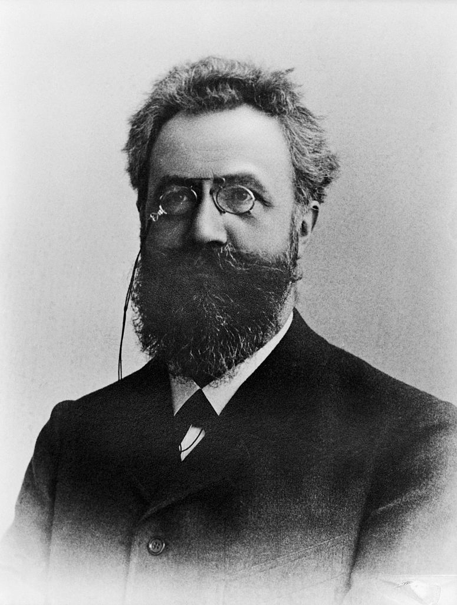
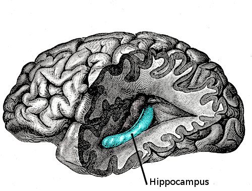

“Memory is the seamstress, and a capricious one at that.”Virginia Woolf
In 1969, on a country road in California, a girl named Susan Nason was murdered. She was eight years old. The case went cold for twenty years. Then, in the late 1980s, her childhood friend Eileen Franklin-Lipsker began to remember something. At first only a fragment — her friend’s face. Then more, week by painful week, in flashes and in dreams: her own father raising a rock; the moment of the killing; a ring on Susan’s hand. By the time the “memory” was complete in 1989, Eileen could describe the scene in vivid detail. Her father, George Franklin, was arrested, tried, and convicted of murder, largely on the strength of his daughter’s recovered recollection. He was sent to prison for life. Six years later, every detail of her memory was shown to have been already public knowledge from old newspaper reports, and her testimony so unreliable that the conviction was overturned. He walked out of San Quentin in 1996, a different man, in a different world. Eileen never recanted. To this day she believes she remembered what she remembered.1
We open with this case because of what it tells us about an organ most people are confident they understand. Memory is, in the ordinary view, a kind of recording — imperfect, certainly, fading at the edges, but in its essentials a tape we replay. Honest people produce honest memories; dishonest ones produce lies. Everything that has happened to you is, in this view, archived somewhere, retrievable in principle, faithful where preserved. None of this is true. And once you grasp what is true instead, half the great puzzles of human testimony — the contradicting siblings, the wrongful conviction, the partner who remembers the same wedding utterly differently — become not puzzles but predictions.
Memory is not playback. It is reconstruction. Every time you remember, your brain rebuilds the experience from scattered fragments — like a paleontologist assembling a dinosaur from incomplete bones — and what it rebuilds is what you then store, sometimes overwriting the older version. The wedding you remember is, in part, the wedding you remembered when you last remembered the wedding. And so on, backward, through a long line of copies whose original you have not seen in years. By the end of this chapter you will know how that machinery works, where it can be made to fail, and one of the most unsettling promises in this whole book: some of your most cherished childhood memories are, in their present form, false — not because you are dishonest, but because you are remembering them.
Memory is not the past preserved. It is the past, reconstructed nightly, by the only mind that remembers it — with no copy elsewhere against which to check.
The Lineage of the IdeaEbbinghaus, Bartlett, and the End of the Tape

The scientific study of memory begins in a small German room in 1885, with a single man memorising nonsense. Hermann Ebbinghaus had decided that, if memory were ever to be studied as physics studied falling bodies, he would have to find a way to strip it of meaning — because meaning, he saw, lets the mind smuggle in associations from outside the experiment. So he invented the nonsense syllable: three-letter strings (ZOF, DAX, BIM) chosen to be unpronounceable as words. He memorised lists of them, alone, and tested himself at fixed intervals. From this almost monkish discipline he extracted the first real quantitative law of psychology: the forgetting curve. The fall is fast at first — you lose roughly half of new material within an hour — then slow, with the residue persisting for days, weeks, years.2 Memory, Ebbinghaus had shown, has a shape, and it is steeper than we like to believe.
Half a century later, in Cambridge, the psychologist Frederic Bartlett turned the question around. Instead of stripping meaning out, he gave his subjects a meaningful but strange tale — a Native American folktale called The War of the Ghosts — and asked them to remember it. He let them retell it days later, then weeks, then years. The story they returned was never the story they had been given. Names dropped. Strange objects were quietly replaced by familiar ones. Cause-and-effect was inserted where the original tale had been content with mystery. The drift was not random. It was always toward what would feel, to a particular English subject in 1932, more familiar, more reasonable, more like a story already in their head. Bartlett called the underlying templates schemas, and he gave the discipline its first taste of what would later become its central truth: we do not store the past as it was. We store it as it makes sense.3
It took another fifty years, and the arrival of fMRI, to make the deeper discovery: that memory is not even retrieved like a fixed file, but reconstructed each time we call it. The very act of remembering puts the memory into a chemically vulnerable state and then re-stores it — sometimes intact, sometimes silently amended by whatever the brain happens to add during the recall. Neuroscientists call this reconsolidation, and it is one of the most important findings of the last two decades.4
Reconsolidation — the now-standard finding that retrieving a memory does not leave it untouched. The memory enters a brief unstable window during recall; what is re-stored may differ slightly from what was retrieved. Across a lifetime of recallings, a memory can drift very far from the experience that first laid it down.
Put these three discoveries together and the comforting model of memory-as-recording is gone. We forget on a steep curve. We remember toward what makes sense, not what was. And every time we recall, we quietly edit the record. The person who returns to a cherished memory most often is, in a strict sense, the person whose memory of it is least faithful.
The MechanismThe Man Without a Past
The most important single patient in the history of memory neuroscience is known by his initials only. He was born Henry Molaison in 1926, and he developed, after a childhood bicycle accident, a severe and intractable epilepsy. In 1953, at the age of 27, his surgeon — in a procedure now considered a tragedy of medicine — removed most of his hippocampus and the surrounding medial temporal lobe on both sides of his brain. The seizures abated. So did Henry’s ability to form any new long-term memory. From that morning until his death in 2008, he lived in a continuous present of roughly thirty seconds.5

For fifty-five years, Henry was studied by the neuropsychologist Brenda Milner and her successors, and from his quiet patience the modern science of memory was built. They learned, first, that the memories he had laid down before the surgery remained largely intact: his childhood, his parents, the world before 1953. So memories, once consolidated, do not need the hippocampus to survive. They learned, second, that he could not retain anything new in conscious memory — each meeting with Dr. Milner, for fifty years, was their first. And they learned, third, the most surprising thing: he could nevertheless learn. Asked to trace a star while looking only at its reflection in a mirror, he grew steadily better at the task day by day — even as he insisted, each morning, that he had never tried it before. There was, then, more than one kind of memory in the human mind. There was the kind Henry had lost — the explicit, narratable memory of events. And there was the kind he had kept — the implicit memory of skills and habits, lodged elsewhere in the brain, indifferent to the hippocampus.6
Henry Molaison’s life made several truths plain that no animal experiment could have. The hippocampus is not the storehouse of memory; it is the librarian. Take it out, and existing volumes remain on the shelves, but no new book can be catalogued. The volumes themselves — the contents — live distributed across the cortex, not in any one place. And the “memory” that we ordinarily mean — the recollection of yesterday’s dinner, of a face, of a childhood — is only one kind of memory among several. Henry could not remember meeting Dr. Milner, but his hand remembered the star.
The Heart of the MatterThe Memory You Are Sure Of, That Did Not Happen
If memory is reconstruction, an obvious and grave question follows: how easily can the reconstruction be tampered with? The answer, established across forty years of careful experimentation, is that it can be tampered with almost trivially — and that the resulting false memories are subjectively indistinguishable from real ones. This is the work of Elizabeth Loftus, and it has changed law, medicine, and the public understanding of testimony as much as any work in our field.
In a famous study, Loftus and her colleagues showed subjects a film of a car accident and then asked them, “About how fast were the cars going when they hit each other?” A second group received an identical question except that “hit” was replaced with “smashed.” A week later, both groups were asked whether they had seen any broken glass in the film. There had been none. Only 14 percent of the “hit” group reported broken glass. In the “smashed” group, the figure was more than double. A single word, embedded a week earlier in a leading question, had inserted glass into their memory of a film they had seen with their own eyes.7
The work went further. In 1995, with her graduate student Jacqueline Pickrell, Loftus showed that an entire event could be planted. They told twenty-four adults a series of childhood stories drawn from a relative who had agreed to help. Three of the four stories were genuine. The fourth was an invention: at the age of five or six, the subject had been lost in a shopping mall, frightened and crying, before being found by an elderly stranger. After three retellings over two weeks, a quarter of the subjects had “remembered” the fictional event — some in vivid detail, complete with the colour of the stranger’s coat. They were not lying. They were producing, in good faith, a memory of something that had not happened.8
False memory — a memory of an event that did not occur, or that occurred quite differently, held with the same subjective conviction as a true one. False memories are not a sign of weakness or madness; they are the predictable output of normal memory machinery operating in normal conditions.
The implications are sober. Across the United States, the Innocence Project has documented hundreds of cases of wrongful conviction overturned by DNA evidence; in nearly three-quarters of them, the original conviction rested in part on eyewitness testimony — testimony given by sincere, confident witnesses who, often years later, were proved to have remembered the wrong face.9 Confidence in a memory is not a measure of its accuracy. It is a measure of how clearly the present reconstruction lights up — which has almost nothing to do with whether the event the reconstruction depicts ever happened in the form remembered.
The witness was not lying. She was remembering. That is precisely the problem.
The Objection That Matters“If Memory Is This Untrustworthy, How Do I Live?”
An honest reader, by this point, may feel something like vertigo. If my memory is this porous, how can I trust anything I think I know? How can I love a person whose past with me I cannot verify? How can I be the person I think I am, if the autobiography is partly fiction? The vertigo is real. It is also, when looked at properly, a misunderstanding of what memory is for.
Here is the reframing that makes the picture survivable, and it is one of the deepest insights to come out of the last two decades of memory neuroscience. Memory was not built to preserve the past. It was built to guide the future. The evolutionary purpose of the brain’s memory system is not historical accuracy — the universe does not need our brains to keep an archive — but adaptive prediction: pattern-extraction from past events for use in the next encounter. The same hippocampal circuitry that retrieves a memory is the circuitry that imagines a future scene; patients with hippocampal damage cannot vividly remember yesterday or imagine tomorrow.10 The two are not, in the brain, separate faculties. They are one faculty — the construction of plausible scenes — pointed in two different temporal directions.
From this perspective, the “errors” of memory are not failures but features. The schemas Bartlett saw, that smoothed the strange folktale into something familiar, are the brain extracting the gist for future use. The reconsolidation that lets each recall edit the memory is the brain updating its model in light of new context. The plasticity that allows false memories to be planted is the same plasticity that lets a person, after years of work in therapy, finally lay down a different relationship to their own past. A memory system that preserved everything verbatim would be useless; one that updates flexibly is precisely the tool a creature needs to survive a changing world.
This does not mean accuracy never matters. In a courtroom, in a clinical interview, in a marriage, accuracy can matter very much. The lesson is rather that we have to know which questions our memory is for. It is exquisitely tuned to the question, “What kind of situation is this, and what should I do?” It is poorly tuned to the question, “What exactly happened on the evening of the fifteenth?” Asking the second question of an instrument built for the first is the cause of much human cruelty and many wrongful prison sentences. The instrument is not broken. We are using it wrong.
Where It Touches Your LifeWhat to Do With a Mind That Edits Itself
The science gives us several uses, large and small.
In the courtroom and at the scene. Reformed police lineup procedures — sequential rather than simultaneous, double-blind administration, immediate confidence ratings — have measurably reduced false identifications. Jurisdictions that have adopted them, on the recommendations researchers like Loftus and Gary Wells have spent careers pressing, see fewer wrongful convictions.11 If you ever serve on a jury, hold confident eyewitness testimony with a different weight than you would have before this chapter.
In the consulting room. The same reconsolidation that makes memory porous has become, in the hands of careful clinicians, the basis for some of the most promising trauma treatments of the past decade. Approaches like Eye Movement Desensitization and Reprocessing (EMDR) and certain forms of cognitive therapy seem to work, in part, by deliberately retrieving a traumatic memory and then introducing a corrective experience while the memory is in its plastic, reconsolidation window — so that what is re-stored carries a different emotional valence than what was retrieved.12 The mechanism is still debated, but the principle is profound: the very rewritability that frightens us in the laboratory is what allows a trauma, properly addressed, to be loosened in the consulting room. The past, the science now suggests, is more changeable than we feared. That is bad news for testimony. It is wonderful news for healing.
In your own life. Three small practices follow from all of this.
First, write things down at the time if they matter. Not because writing is more accurate — you can be wrong on the page as easily as in the head — but because the text, unlike the mind, stops being edited. Diaries, contemporaneous notes, sent emails are anchors against the slow drift of recollection.
Second, do not interrogate witnesses, including yourself, with leading questions. “Wasn’t she upset?” will produce a more upset wife in next week’s recall than “How did she seem?” will. We rewrite each other constantly without knowing it. Wars and divorces have been won by the team with the better leading questions.
Third, hold your dearest memories gently. Not because they are not true — many are, in their essentials, faithful. But because the particular vivid detail — the colour of the dress, the exact words your father said — is the part most likely to have been quietly edited in by the last thousand recallings. The feeling is more reliable than the photograph. Trust that. Treat the rest as art.
“What is memory for?”
Not whether it is accurate — the deeper question. Six who have spent their lives with it.
“The same circuitry that retrieves a memory imagines a future scene. Patients with hippocampal damage cannot vividly remember yesterday or vividly imagine tomorrow. Memory is not, at root, about the past. It is the brain’s scene-construction engine, run in either direction.”
“The reconsolidation window is the most hopeful finding I have encountered in thirty years of work. A memory that has tormented a patient for decades can, properly approached, return to storage with a different charge. Memory is not a prison sentence. It is the most plastic part of a person.”
“And ask what each recollection is doing for the patient. The memory the depressive returns to is not an archive request; it is a present need wearing the costume of a past event. The question is never just what is being remembered. It is also why it is being remembered now.”
“If memory is what makes a person continuous — the same self today as yesterday — and if memory is editorial rather than archival, then the self is not a thing kept but a thing rewritten. This is unsettling only to a metaphysics that demanded it stay still. The river was never the same river.”
“Be careful with the lesson. ‘Memory is unreliable’ can be misused to dismiss real testimony from real victims. The honest position is that confidence is not accuracy, leading questions corrupt recall, and corroboration matters — not that nothing anyone remembers can be trusted.”
“Then a person is, in part, the story they have most recently told themselves about who they are. Which makes the choice of which memories to revisit — and how to tell them — one of the central moral acts of a life.”
Myth vs. RealitySetting the Record Straight
What We Like to Believe
“My memory works like a recording — imperfect at the edges, but in the essentials a faithful playback of what happened. If I am confident about a memory, it is probably accurate. My most vivid childhood memories must be true; I can see them so clearly.”
What the Evidence Shows
Memory is reconstruction, not playback. Confidence does not track accuracy — vivid, certain false memories are routinely produced in healthy people by ordinary suggestion. Some of your most cherished childhood memories are in their present form partly invented, not from dishonesty but from a normal mind doing what memory normally does. The right relationship to your past is reverence for the gist, modesty about the detail.
The reality that memory can be implanted has been used both well and badly. In the 1980s and 1990s, an unfortunate sub-culture of therapists encouraged patients to “recover” long-buried memories of abuse, sometimes producing accusations that were later shown to be false and that ruined families. Loftus’s work was, in part, a response to that catastrophe. The opposite danger is real too: dismissing the genuine testimony of survivors as “just false memory” has done its own great harm. The honest position holds both truths at once. Memory is suggestible; abuse is also real. Confidence is not accuracy; corroborated memory often is. Good practice asks careful, non-leading questions, seeks independent evidence, and never decides a case on a single, unverified recollection.
The lines worth carrying out of this chapter.
- Memory is not playback. It is reconstruction. Every time you remember, your brain rebuilds the experience from fragments — and what it rebuilds is what gets stored next.
- Confidence is not accuracy. Sincere, certain false memories are produced routinely by normal minds under ordinary suggestion. The witness was not lying. She was remembering.
- Memory was not built to preserve the past. It was built to guide the future. The same circuitry that recalls yesterday imagines tomorrow. Treat your memory as a tool for prediction, not as an archive.
- The hippocampus is the librarian, not the library. Henry Molaison’s loss showed memory is not stored in one place — and that there is more than one kind of memory, not all of which we have to lose together.
- The same plasticity that frightens us in the laboratory is what allows healing in the consulting room. A memory that has tormented a person for decades can, properly approached, return with a different charge.
If you keep one sentence: do not trust the vividness of your memory; trust the gist, hold the detail gently, and remember that the past, in your head, is the most living thing about you.
Research ReferencesSources & Notes
- ReferenceMacLean, H. N., Once Upon a Time: A True Story of Memory, Murder, and the Law (1993) — on the Franklin case; Loftus, E. F., “The reality of repressed memories,” American Psychologist (1993).
- HistoryEbbinghaus, H., Über das Gedächtnis (1885) — the forgetting curve.
- ScienceBartlett, F. C., Remembering (1932) — schemas and “The War of the Ghosts.”
- ScienceNader, K., Schafe, G. E. & LeDoux, J. E., “Fear memories require protein synthesis in the amygdala for reconsolidation after retrieval,” Nature (2000); Dudai, Y., “Reconsolidation: the advantage of being refocused,” Current Opinion in Neurobiology (2006).
- ScienceScoville, W. B. & Milner, B., “Loss of recent memory after bilateral hippocampal lesions,” Journal of Neurology, Neurosurgery, and Psychiatry (1957).
- ReferenceCorkin, S., Permanent Present Tense: The Unforgettable Life of the Amnesic Patient, H.M. (2013).
- ScienceLoftus, E. F. & Palmer, J. C., “Reconstruction of automobile destruction,” Journal of Verbal Learning and Verbal Behavior (1974).
- ScienceLoftus, E. F. & Pickrell, J. E., “The formation of false memories,” Psychiatric Annals (1995) — the “lost in the mall” study.
- ReferenceInnocence Project, eyewitness misidentification reports; Wells, G. L. et al., recommendations for reformed lineup procedures.
- ScienceSchacter, D. L. & Addis, D. R., “The cognitive neuroscience of constructive memory: remembering the past and imagining the future,” Philosophical Transactions of the Royal Society B (2007).
- ScienceWells, G. L. et al., “Eyewitness identification procedures: Recommendations for lineups and photospreads,” Law and Human Behavior (1998).
- DebatedEcker, B., Ticic, R. & Hulley, L., Unlocking the Emotional Brain (2012); on EMDR, Shapiro, F. (various). The reconsolidation account of these therapies is promising and still actively investigated.
Citations support the science presented; a production edition would carry full bibliographic detail and DOIs, externally verified.
Going FurtherRecommended Books
Read
- Daniel L. Schacter, The Seven Sins of Memory (2001)
- Elizabeth Loftus & Katherine Ketcham, The Myth of Repressed Memory (1994)
- Suzanne Corkin, Permanent Present Tense (2013) — the life of H.M.
- Charles Fernyhough, Pieces of Light (2012)
- Oliver Sacks, “The Lost Mariner,” in The Man Who Mistook His Wife for a Hat (1985)
Watch & Listen
- Elizabeth Loftus, “How reliable is your memory?” (TED, 2013)
- Documentaries on the Innocence Project and eyewitness misidentification
- Interviews with researchers on EMDR and reconsolidation therapy